I'm a backend engineer with 14 years in software, and Python is the base of my career. Today I work with FastAPI, PostgreSQL and LLMs in production.
At Riley, an AI parenting app, the backend depended on one LLM provider and uptime sat at 93%. I set up Vertex AI as the primary with Claude as the fallback, and uptime went to 99%. The downtime that was left wasn't coming from the provider, so I tuned Gunicorn on Azure and got it to 99.9%.
I work remotely from Venezuela with US and European teams. I once explained an Azure outage to a CEO and a marketing team in five minutes, no jargon.
Is only the start! I'm excited to connect with you and explore potential collaborations that allow us to grow together.
SKILLS

Large Language Models (LLM) | Backend Development | REST APIs | Docker | Microsoft Azure | Google Cloud Platform / Vertex AI | Claude API | LangChain | RAG / Retrieval augmented generation (IA) | Inngest | Apache Airflow | Celery | Redis | Node.js | React.js | Next.js | SQLAlchemy | Pydantic | PyTest | Supabase | Amazon S3 | JavaScript | Git | Express.js | TailwindCSS | Pandas (software) | Elasticsearch | CSS | Yii | Flight framework | PHP | Ionic Framework | Firebase | SocketIO | Redux.js | LimeSurvey | HTML | Cadence | Front-End Development | Solidity | Laravel | Web Development | C++ | Linux
LANGUAGES
- Spanish (Native)
- English (C1)
- French (B2)
EDUCATION
-
Universidad Valle del Momboy
Computer Engineering (2011 – 2015) -
Universidad de Los Andes (VE)
Systems Engineering - Unfinished studies (2008 – 2010)
CERTIFICATIONS
-
Toptal Network Member (2026)
toptal.com/developers/resume/asdrubal-suarez
ACHIEVEMENTS
- Finalist in Concurso Ideas 2012
Organized by Fundación Ideas · Jan 2012
Associated with EmprendaMás
PORTFOLIO
- Optimization of the bonification to academic excellence system for Colegio Los Cedros (2015)
improved the bonification of the academic excellence system for Colegio Los Cedros to upgrade the user experience.
- Web development of a website for Diario Los Andes (2012)
I led this project and developed the website for Diario Los Andes, one of the main newspapers in Trujillo with editions in Táchira and Mérida.
EXPERIENCE
- Senior Software Engineer
Riley · Contract, part-time · Apr 2026 - Present
Riley · Full-time · Jan 2025 - Apr 2026
AI parenting app with about 10,000 users. I am the main backend engineer, on FastAPI and PostgreSQL running on Azure, with Vertex AI and Claude as LLM providers. I replaced the single LLM provider with failover, Vertex AI as primary and Claude as fallback, taking uptime from 93% to 99%, then tuned Gunicorn on Azure to reach 99.9%. I also wrote about 25 Inngest workflows for daily guides, notifications and scheduled refreshes.
- Senior Software Engineer
Tellen · Full-time · Nov 2023 - Dec 2024
AI platform that helps accountants close reports from 10-Ks and other documents, for clients at Big Four scale. I was a backend engineer working with the CTO. I refactored poorly structured endpoints into a services architecture, kept PyTest coverage around 90%, shipped features end to end on FastAPI and React, and worked directly with the CEO and the marketing lead.
- Python Back-end Developer
TEAM International · Full-time · Nov 2022 - Oct 2023
I develop scalable applications with Python, Pytest, Flask, SQLAlchemy, Redis and Celery. I use open-source technologies to create efficient and fast solutions, improving the user experience.
- Cofounder and consultant
Teamitfy · Freelance · Oct 2020 - Oct 2023
Consulting firm for US startups. I was the technical cofounder, working with our CEO and a project manager. I designed and led the MVP of an online sports betting platform (architecture, technology choices and API decisions, together with the frontend developers and the project manager), built private file uploads to S3 with presigned URLs (30-minute expiration), and wrote Python REST APIs with Flask, Pydantic and Docker for US startup clients.
- Developer
CryptoFR · Freelance · May 2019 - Aug 2022
I worked with a comments WordPress plugin which in turn connects to a NodeJS API. This plugin can handle a high-volume of comments per day. I developed both the backend and the frontend of it. We’ve been working with Smart Contracts using the Polygon Scan API and the Alchemy API. I developed a scraper to get NFTs from Alchemy API using Scrapy in Python. Also, we used Solidity to start developing smart contracts for exchanging NFTs.
- Senior Node Developer
Clevertech · Full-time · Sep 2019 - Dec 2019
Developed a NodeJS backend for Clevertech projects. I also maintained a React Front-end.
- Software Engineer
Data Drum · Freelance · Nov 2018 - Feb 2019
I contributed to a project to share economic indicators from different sources around the world. As a software engineer, I worked part-time using NodeJS and PHP on secure MySQL database infrastructures, optimizing NodeJS APIs that were built with ES6 and ExpressJS. I did some Python scripting as well.
- Software Engineer
Vascar Solutions · Full-time · Dec 2016 - Nov 2018
I worked with an App for monitoring algorithmic trading written using ReactJS, NodeJS, and a PostgreSQL backend. Due to its high concurrency and the amount of data that needs to be processed, it was designed with an architecture that uses isomorphic redux states, they are shared between frontend and backend.
Once a user is logged in, a token is generated and this token is used by the socket IO backend in order to perform authentication. Afterward, events can be sent back and forth by using the SocketIO backend allowing data to be updated in the frontend. This process is much faster than using a REST API approach.
For testing, we used stress testing throughout the Apache Benchmarking tool for ExpressJS endpoints, native NodeJS profiling, and unit testing through Jest and Enzyme.
I participated in the leadership of a team for an application of Fantasy Football.
- Web Developer
Shocklogic · Full-time · Aug 2015 - Nov 2016
Shocklogic specializes in event management software. Among the systems I worked on are:
- Surveylogic: a survey management application.
- Mobapplogic: a generator of mobile applications written in PHP.
- Shocklogic.com's internal API.
- Scanlogic: App created for scanning participants in events, created using the Ionic framework.
- Web Developer
EmprendaMás · Part-time · Jan 2012 - Jul 2015
Web developer using the Yii framework and model-view-controller patterns. Use of jQuery, CSS, HTML5. Among the projects I worked on were:
- The backend of the Diario de Los Andes website.
- Sistema Bono de Excelencia Aprodet for Colegio Los Cedros.
- Sistema SECTIR for statistical use, created for FUNDACITE TRUJILLO.
- Intern
Editorial Diario de Los Andes C.A. · Internship · May 2014 - Jul 2014
Work on the maintenance of the homepage of Diario de Los Andes.
- Scholarship holder
Universidad Valle del Momboy · Apprenticeship · Apr 2011 - Jul 2012
I worked with Limesurvey in order to validate survey's data.
REFERENCES
- Stephanie Habib – Senior Software Engineer
I am thrilled to wholeheartedly recommend Asdrubal, with whom I had the privilege of working closely for a year during his tenure as a contractor.
Asdrubal's exceptional blend of technical expertise, insatiable curiosity, and infectious enthusiasm greatly enhances any team's dynamic. Throughout our collaboration, it became evident that Asdrubal is a dedicated and hardworking professional, consistently pursuing excellence. His proactive nature fuels his relentless pursuit of knowledge and new challenges in the ever-evolving software engineering landscape… He possesses an innate ability to delve into unfamiliar territories, analyze intricate technical issues, and seek the right guidance to craft well-thought-out solutions.
In conclusion, Asdrubal's dedication, learning passion, problem-solving skills, and vibrant personality make him an invaluable team contributor.
- Juan Francisco Mollega Mendoza – Computer Engineering
Excellent professional, an expert in new development technologies, always trained and willing to teach and share his knowledge, we had the opportunity to collaborate on some projects that were fully optimized thanks to his high competence and professionalism, best regards.
- Christopher Hanson – Senior Data Engineer
I have worked extensively with Asdrúbal at Indigo Ag and he is a great team member to work with. He's very considerate of others and makes sure communicate clearly and often, frequently going out of his way to create recordings and other records of information he's gathered or issues he has encountered. I would be very happy to work with Asdrúbal at any future company.
- Gabriel Banchs – Lead DevOps Engineer
After a long period working with Asdrubal I can assure that he is one of those people who are committed and passionate about the work he does, he is dedicated and determined in the execution of his tasks to complete them successfully which he does 100%, I blindly recommend him for any Senior Developer role especially in React and JavaScript based technologies. In addition to this he is a great partner that you can count on for support as well as always making the best contribution to the team.